AF3 自动助手 v5.0.6 · 安装与完整使用指南
AF3 自动提交助手使用指南
从安装、准备 FASTA、生成本地批次、导入并核对草稿，到确认提交预测、查找结果、保存 ZIP 和提取 CSV。先按日常流程使用；后面的 50 任务章节是单独的历史实测记录。
操作安全：草稿导入只保存草稿；只有“启动”后的官网提交确认才开始预测并消耗额度。遇到超时、部分保存或锁定时，先核对官网历史，不要盲目重复导入或提交。
以下新增界面截图来自不同批次的操作记录，画面里的 30、60、590 等数字只属于截图当时的清单，不是推荐批量数，也不代表后文 50 任务样例的结果。50 任务实测仍单独记为：已确认导入 30，确认完成预测 15，另 15 个草稿未提交，第二批 20 个未上传。
日常使用：从 FASTA 到预测
推荐按「准备 → 本地生成 → 导入草稿 → 历史核对 → 明确提交 → 核对完成」顺序。每一步的状态含义不同，不要跳过核对。
-
安装脚本并确认账号
使用 Edge 或 Chrome 安装 Tampermonkey，再安装仓库正式版
af3-auto-submitter.user.js。允许扩展在alphafoldserver.com运行并刷新页面；标题应显示 v5.0.6，顶部当前账号需与本次任务所属账号一致。使用 InPrivate/无痕窗口时，另行允许 Tampermonkey 在无痕模式运行。若要与普通窗口共享账号目录，按 README 的升级说明 设置扩展存储；登录 Cookie 仍由浏览器管理。
面板未出现时先检查脚本是否启用、站点权限及当前地址，再刷新官网。只启用一份正式版。
-
准备 FASTA：标题是任务，序列行是链
用 UTF-8 纯文本保存。每个
>名称开始一个任务；其后每个非空序列行各是一条蛋白链，下一个标题开始新任务。>complex_one ACDEFGHIKL MNPQRSTVWY
单链请保持在一行，不要按常见 FASTA 格式折行，否则折开的每一行会被识别为不同链。脚本只接受蛋白氨基酸字符；每链最多 2700 个残基、每个任务所有链合计最多 3000 个。错误会阻止生成，不静默跳过记录。
每批按任务数最多 30 个，不按链数计算。首次先用小文件或一个任务检查命名和链数。
-
生成并保存在本地
在「FASTA 分批导入」选择输入文件，点「生成并选择保存目录」，再选择输出父文件夹并授权。脚本新建
af3_…/子目录，写入manifest.json以及每批配对的part001.fasta、part001.json等文件。生成只处理本地文件，不会上传官网、建立草稿或消耗预测额度。保留整个批次目录；不要单独改名、编辑或删除其中的清单和配对文件。
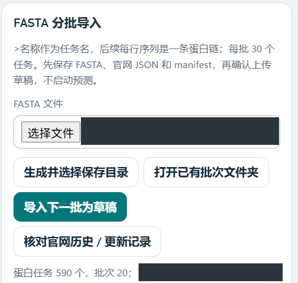
FASTA 面板操作入口示例；图中计数来自另一批次，不是建议输入规模。 -
明确确认后导入下一批为草稿
先在官网关闭弹窗和菜单、清空
Search History，并且只选择Saved draft。确认顶部账号正确后点「导入下一批为草稿」。确认框会列出批次号和任务数；核对无误才点确认。脚本使用官网原生
Upload JSON校验后保存草稿；不会自动点击预测提交按钮。导入期间保持页面打开，不操作官网的其他菜单或弹窗。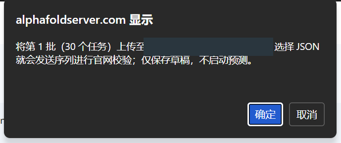
示例确认框显示 30 个任务；实际数量以自己的批次与弹窗为准。 -
核对官网历史，不用重复导入来补记录
等待草稿在官网列表中出现。回到面板点「核对官网历史 / 更新记录」，按提示清空搜索并选择匹配状态；检查提示中的已确认数/任务数，以及本地清单的「已导入」计数。
只有完整匹配当前账号的任务才算核对成功。若看到
Timeout、部分匹配或“需核对”，先查官网当前历史、面板日志及账号；页面筛选不正确时按提示调整后再次核对。保存结果不确定时不要再上传同一批。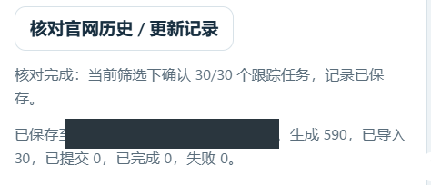
完全匹配的示例；实际任务数必须与你确认上传的批次一致。 超时表示结果尚需核实，不等于可以安全重传。 -
检查目标草稿，再启动真实预测
仅选择
Saved draft，清空Search History或用唯一前缀过滤，确保官网列表正好是计划处理的草稿；不要把不相关旧草稿混入。核对顶部账号和官网剩余额度。输入「本次数量」后点「启动」。运行前摘要会再次显示模式、当前列表行数和处理上限；仔细确认后才继续。官网行复选框不限定脚本提交范围，数量是处理上限。每次提交会消耗官网额度。
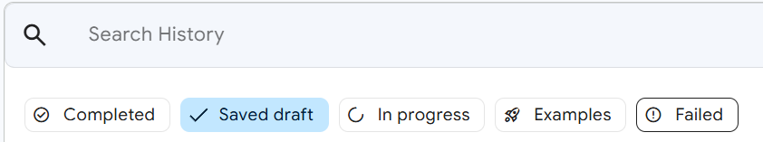
启动前过滤到目标状态并复核搜索条件。 -
等待提交回执，再核对预测完成
提交成功回执代表官网接受了预测请求，不代表预测已经完成。任务仍需在官网运行；完成后回到原账号，在历史中选择
Completed，点击「核对官网历史 / 更新记录」并确认完成状态和本地清单。暂停只影响后续操作，不能撤回已经发送的请求。遇到失败、超时或启动锁定时先检查官网历史与额度，不要刷新后马上重复点击。v5.0.3 会将新的错误提示短暂闪烁三次；系统开启减少动态效果时只高亮。
汇总中的“已提交”“已完成”“失败”代表不同状态；以官网任务行和「核对官网历史」的结果为准。
结果下载与 CSV 分析
-
按日期查找并使用官网原生下载
官网仅选择
Completed，按需填写Search History；在面板「下载任务」输入起止日期后点「查找任务」。日期按官网显示的Modified计算，起止日期都包含。打开原批次目录后，日期标题会显示核实后的分批编号和匹配数；同一天有多批会分别标注，未匹配的日期不附加批次说明。核对匹配任务后，可按天选择或全选；「应用到官网勾选」只替换官网复选框，不会下载。之后手动点击官网原生
Download。合并 ZIP 每次最多 50 个任务；分开模式下每下载一个，再点「下一任务」。页面搜索、筛选、排序、日期或账号变化后重新查找并核对；应用勾选会替换官网原有选择。
-
把官网 ZIP 集中放进文件夹
使用官网原生 Download 下载合并 ZIP 或逐任务 ZIP，建议集中放入
results/。脚本已移除“保存所选 ZIP”按钮，不再代替官网下载，也不修改浏览器默认目录。可使用独立 ZIP 文件夹，不必先打开原批次，不需要官网查找或勾选；如果希望按清单统计缺失，可打开原批次后选择它的 results。
保留原 ZIP，不必解压，也不要运行下载目录里的脚本。
-
选目录，确认结构，再提取
点“选择 ZIP 文件夹 / 提取 CSV…”，每次都会出现目录选择器。已授权的 results 优先作为默认位置，浏览器也会记住上次选择；首次仍需你授权目录。
先扫描目录和子目录，列出 ZIP 路径、大小和数量，请你确认后才读取指标内容。取消此预览不解析 ZIP、不写 CSV。没有 manifest 也能提取，其他已打开清单不会影响独立目录。
按钮下方显示提取阶段进度：扫描目录时为不定进度；ZIP 按已解析包数、CSV 按已保存文件数分别显示百分比。一个大 ZIP 处理时进度可能暂时不动；ZIP 达到 100% 还不代表 CSV 已保存。
全部解析成功后再次确认覆盖已有 CSV。每个 ZIP 的最佳模型/链对报告放在 ZIP 旁，三张汇总表放在所选目录根。源 ZIP、清单和输入文件不修改。
无清单时不判断缺失任务；部分写入后停止只保留已提交 CSV，按面板数量核对。
-
刷新后恢复，按清单继续
选择「打开已有批次文件夹」，直接选原
af3_…/目录，不是上一级父目录或results/。恢复后检查当前账号、生成/导入/提交/完成计数，再核对官网历史。不要再次生成相同输入来续跑；对于“待核对”批次先核实官网记录。目录清单是本地跟踪记录，不能代替官网预测状态，也不会把官网任务搬到另一个账号。
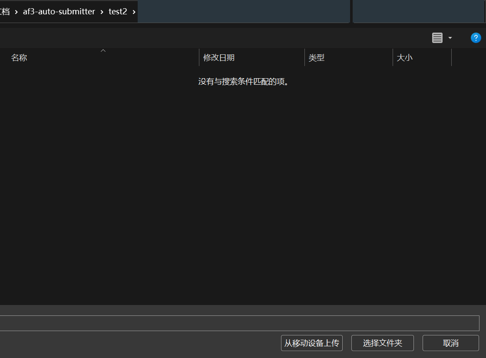
通过浏览器文件夹选择器授权原批次目录。 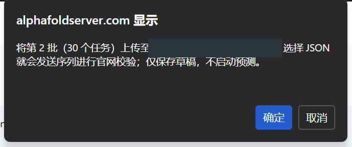
确认显示的批次和数量后再上传；取消不会导入。 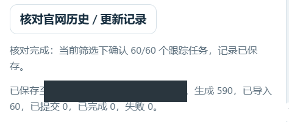
下一批完全匹配后才更新本地计数；数字仅为截图当时状态。
本页说明常用路径；日期扫描、匹配规则、文件格式和资源限制见 README 的完整技术说明。换账号、真实预测及任何账户额度操作都应遵守官网规则；不绕过账号或额度限制。
50 个真实蛋白示例：操作记录
-
选示例文件，生成本地批次
登录官网，确认面板显示的是要使用的账号。若没有面板，先安装 Tampermonkey 和 AF3 脚本，按浏览器提示开启用户脚本运行权限；无痕窗口还需允许扩展在无痕模式运行。
选择
example_50_proteins.fasta，点「生成并选择保存目录」，选择并授权输出父目录（实测为test2/）。脚本建立新的af3_…子目录，写出两组 FASTA/JSON 和清单；这一步不上传。输入文件按本脚本规则每条链独占一行，不要折行。第一批 30 个任务，单链、双链、三链各 10 个；第二批 20 个，分别为 7、7、6 个。
test2/ └─ af3_…/ ├─ manifest.json ├─ example_50_proteins_part001.fasta ├─ example_50_proteins_part001.json ├─ example_50_proteins_part002.fasta └─ example_50_proteins_part002.json
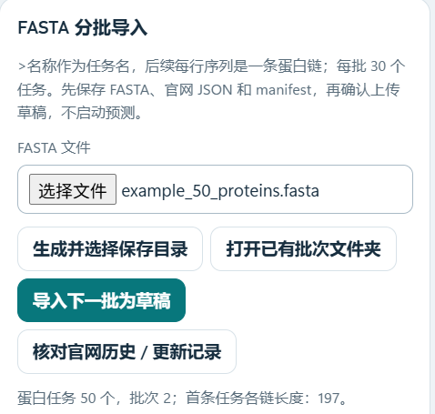
新文件的本地生成结果，不是此前 590 任务的演示。 -
清空搜索，导入第一批草稿
清空官网
Search History，只选Saved draft，关闭已有官网弹窗或菜单。点「导入下一批为草稿」，核对确认框中的账号、批次号和任务数。本例是第 1 批，30 个任务。确认后才发送该批 JSON 校验并保存草稿；导入草稿不会启动预测，也不要用「提交任务」区的「启动」代替草稿导入。
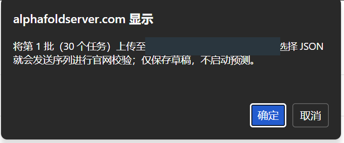
草稿上传确认，说明不会启动预测。 -
先确认草稿入库
弹窗关闭不代表保存成功。本次保存后出现了
Timeout，最初只确认到部分记录，没有重传。等官网列表更新后，在原账号清空搜索、保持
Saved draft，点「核对官网历史 / 更新记录」，确认了 30/30，清单记录「生成 50，已导入 30，已提交 0」。若仍有缺项，先检查官网和日志，不能用反复导入代替核对。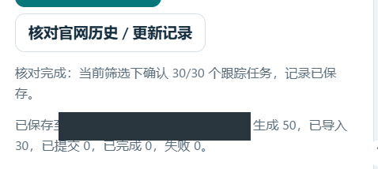
草稿入库已核对，预测尚未提交。 -
隔离目标草稿，启动真实预测
仅选
Saved draft，用本批独有的名称前缀筛选。本次搜索yeast_，逐项核对全部结果正好是新导入的 30 个，没有之前的草稿。若账号中已有同前缀旧任务，应继续核对；无法隔离时不要批量启动。官网勾选不能限定提交范围。脚本每轮取当前列表首条，后续任务会补入；「本次数量」只是处理上限。核对账号与官网额度后填写数量，点「启动」并检查运行前摘要。
这是会消耗官网额度的真实预测。本次计划上限 30，不代表最后 30 个都已提交。

先隔离本批任务，再检查完整结果。 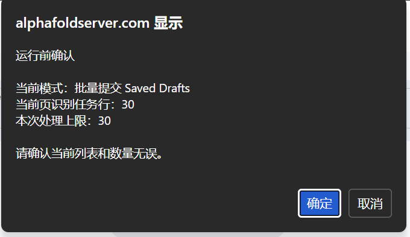
预测提交前的确认，与草稿导入确认不同。 -
官网报错后先停止核对
本次前 15 个收到官网启动成功确认，第 16 次提交返回
Failed to launch job。脚本停止并锁定启动，不能把计划上限 30 当成实际提交数。此汇总的「完成 15」表示提交已确认，不是预测已完成。「失败 1」是一次提交报错，不等于一个已启动的预测任务失败。先核对原账号历史与额度，结果不明时不要直接刷新解锁或重提。
暂停后没有再次执行该提交请求。

实测报错原样保留，没有改写成全部成功。 -
核对预测成功完成的结果
在原账号下清空搜索、取消
Examples，选择需要核对的状态。查看成功结果可选Completed，再点「核对官网历史 / 更新记录」，而不是重新导入。官网对应 15 个任务均为
Succeeded。清单写回「已导入 30，已提交 15，已完成 15，失败 0」，包括单链、双链、三链各 5 个。第一批另 15 个仍为草稿，第二批没有上传。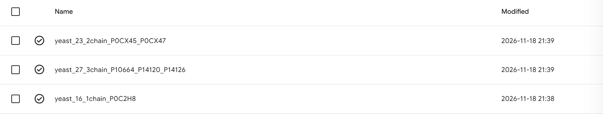
官网成功记录的局部截图。 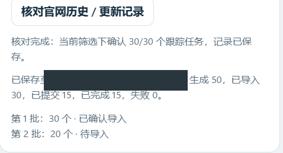
暂停前最后核实的本地进度。
50 任务实测：未执行的后续步骤
这是前文 50 蛋白样例的实测暂停记录，不是通用流程：已导入 30，其中 15 个预测确认完成、15 个仍为草稿；第二批 20 个未上传。下面所列后续步骤未在该样例中执行。如何恢复目录和核对状态，请按本页上方「日常使用」中的步骤操作；界面截图来自其他批次，计数不能套用到此样例。
-
打开本次 50 任务的原目录
刷新、重新登录或换浏览器后，点「打开已有批次文件夹」，选择本次文件对应的
test2/af3_…/子目录。目录应含manifest.json和example_50_proteins_part001、part002的 FASTA/JSON 配对文件。不要选父目录
test2/或早先 590 任务的目录，不用重新生成或选择原 FASTA。文件夹恢复不会迁移官网任务。本样例未执行此恢复步骤。通用目录选择方法见上方「刷新后恢复，按清单继续」；其他批次截图不作为本样例恢复成功的证据。
-
原账号继续第一批剩余草稿
第一批的 15 个已完成预测和另 15 个草稿仍留在原账号。恢复后先核对账号、清单和官网历史，不能把已完成任务当作待提交任务。
继续时仅选
Saved draft，筛选并核对未提交的任务；数量不超过实际目标数和当前可用额度。先前报错或结果不明的，先人工核对，再决定是否刷新与继续。本样例未继续提交。没有后续预测结果可供截图；请按上方「检查目标草稿，再启动真实预测」操作，并以官网当前状态为准。
-
另一账号继续未导入的第二批
计划演示，尚未执行。仅在官网允许的账号使用方式和额度范围内操作，不绕过限制。登录后恢复同一文件夹，核对账号及批次。第 2 批为「待导入」时，切到仅选
Saved draft，检查弹窗应为第 2 批，20 个任务。第一批不会随文件夹转移，结果仍需回原账号核对。不重传第一批，不重新生成同名批次，也不跳过「需核对历史」的批次。
本样例第二批未上传。上方有另一批次的确认与核对界面示例，不代表本样例第二批已导入，也不证明跨账号操作结果。